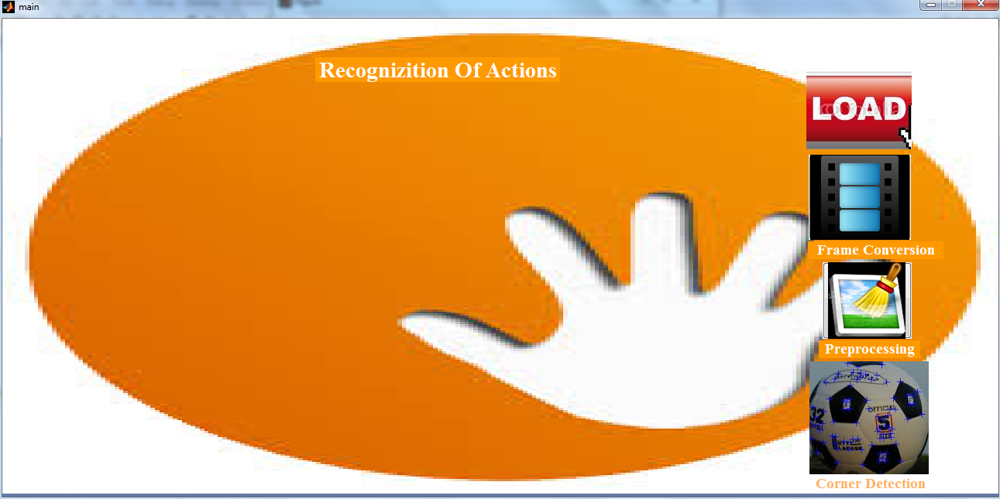

function varargout = main(varargin)
gui_Singleton = 1;
gui_State = struct('gui_Name', mfilename, ...
'gui_Singleton', gui_Singleton, ...
'gui_OpeningFcn', @main_OpeningFcn, ...
'gui_OutputFcn', @main_OutputFcn, ...
'gui_LayoutFcn', [] , ...
'gui_Callback', []);
if nargin && ischar(varargin{1})
gui_State.gui_Callback = str2func(varargin{1});
end
if nargout
[varargout{1:nargout}] = gui_mainfcn(gui_State, varargin{:});
else
gui_mainfcn(gui_State, varargin{:});
end
function main_OpeningFcn(hObject, eventdata, handles, varargin)
handles.output = hObject;
ah=axes('unit','normalized','position',[0 0 1 1]);
bg=imread('Files\1.jpg'); imagesc(bg);
set(ah,'handlevisibility','off','visible','off');
uistack(ah,'bottom');
guidata(hObject, handles);
function varargout = main_OutputFcn(hObject, eventdata, handles)
varargout{1} = handles.output;
function Input_Callback(hObject, eventdata, handles)
global vfilename;
global vpathname;
global nFrames;
global vi;
global k
delete('frames\*.jpg');
[ vfilename, vpathname ] = uigetfile( 'dataset\*.avi', 'Select an video' );
I=mmreader(strcat( vpathname, vfilename ));
nFrames = I.numberofFrames;
vidHeight = I.Height;
vidWidth = I.Width;
mov(1:nFrames) = ...
struct('cdata', zeros(vidHeight, vidWidth, 3, 'uint8'),...
'colormap', []);
for k = 1: nFrames
mov(k).cdata = read( I, k);
mov(k).cdata = imresize(mov(k).cdata,[256,256]);
imwrite(mov(k).cdata,['Frames\',num2str(k),'.jpg']);
end
implay([vpathname vfilename]);
function frameconversion_Callback(hObject, eventdata, handles)
for I = 1:50
im=imread(['Frames\',num2str(I),'.jpg']);
figure(1),subplot(5,10,I),imshow(im);
axis off;
end;
function Preprocessing_Callback(hObject, eventdata, handles)
global nFrames
for i=1:nFrames
img=imread(['Frames\',num2str(i),'.jpg']);
R=img(:,:,1);
G=img(:,:,2);
B=img(:,:,3);
pr=medfilt2(R);
pg=medfilt2(G);
pb=medfilt2(B);
pre=cat(3,pr,pg,pb);
axes(handles.axes1);
imshow(pre);
title('Preprocessed Frames','fontsize',14,'fontname','Times New Roman','color','White');
axis off;
end
function Cornerdetection_Callback(hObject, eventdata, handles)
global nFrames
for i=1:5
img=imread(['Frames\',num2str(i),'.jpg']);
img1gr=rgb2gray(img);
img1gr=imresize(img1gr,[256,256]);
SwitchWaitbars = 'on';
NOfWindows = 4;
TypeOfCornerDetector = 'HarmonicMean';
TypeOfNBHOOD = 'const';
NBHOOD = ones(3);
BorderDistance = 4*NOfWindows;
ThreshType = 'const';
HarrisThresh = 5;
k = 0.055;
Dilate = 'no';
radius = 10;
sigma_nmbr = 9;
dispPlaces = 5;
[ HrLPoints1 ] = harrislpls( img1gr, TypeOfNBHOOD, NBHOOD, TypeOfCornerDetector, BorderDistance, ThreshType, HarrisThresh, k, Dilate, radius, sigma_nmbr, dispPlaces, SwitchWaitbars );
axes(handles.axes1)
imshow(img1gr,[]), hold on
axis off;
showellipsefeatures(HrLPoints1,[1 1 0]);
end
main1
